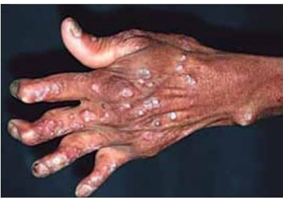
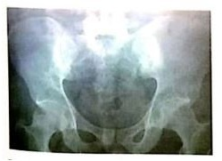

Questão 1 · Tratamento · Tratamento medicamentoso · 4000190502Julia tem 48 anos de idade e procura atendimento no Ambulatório relatando dor em mãos e pés há quatro meses. Ao exame físico, há artrite em punhos e tornozelos, além de metacarpofalangeanas proximais das mãos. Ela veio à consulta acompanhada de sua amiga Marlene, de 52 anos, que tem a mesma queixa, mas ao exame apresenta também lesões cutâneas eritêmato-descamativas em cotovelos, dorso e couro cabeludo, além de distro a ungueal e artrite em interfalangeanas distais. Em relação aos casos das amigas, assinale a alternativa correta.
A Júlia parece ter artrite reumatoide e Marlene, osteoartrite. Portanto, somente Júlia deverá ser tratada com metotrexato.
B Ambas parecem sofrer de artrite reumatoide, mas apenas Marlene deve iniciar imunobiológico, pois tem acometimento distal.
C Ambas têm quadros de espondiloartrite periférica e têm indicação de tratamento com metotrexato ou sulfassalazina.
D Apesar de as duas terem diagnósticos diferentes, seus tratamentos podem ser feitos com os mesmos medicamentos.
Questão 2 · Exame f ísico · Manif estações articulares · 4000188304No exame físico, os testes de Gaenslen e Patrick são usados para o diagnóstico de:
A Hérnia de disco cervical
B Pneumoperitôneo
C Colecistite aguda
D Sacroileíte
E Labirintopatia
Questão 3 · Reumatologia · Espondilite Anquilosante · 4000184517Em relação à espondilite anquilosante, assinale a alternativa correta.
A Ela se manifesta exclusivamente em mulheres.
B As articulações periféricas são sempre preservadas.
C Ela pode estar associada ao antígeno de histocompatibilidade HLA-B27.
D No teste de Schoeber, o paciente apresenta maior flexão anterior à coluna lombar.
E O fator reumatoide é positivo.
Questão 4 · Reumatologia · Espondilite Anquilosante · 4000183315A doença reumática que evolui com acometimento de coluna, simétrica e contínua (também chamada “coluna em cana de bambu”), além das articulações sacroilíacas, é:
A Espondilite anquilosante.
B Artrite reumatoide.
C Osteoartrite.
D Artrite psoriática.
Questão 5 · Reumatologia · Artrite psoriásica · 4000182171Mulher, 52 anos, refere dor e rigidez em região lombar pela amanhã há 1 ano. Ambos os sintomas são aliviados, parcialmente após horas e atividade ou uso de AINEs. Refere dor em calcanhares há 3 meses. Nega doenças e tratamentos. Exame físico: bom estado geral, corada; sem lesões cutâneas; unhas: onicólise e mancha de óleo nos pés; teste de Patrick positivo à esquerda. Os pés são mostrados na foto abaixo: Qual diagnóstico é mais provável?

A Gota tofácea crônica.
B Artrite psoriásica.
C Artrite reumatoide.
D Espondilite anquilosante.
Questão 6 · Artrite reativa · 4000168889A artrite reativa em indivíduos com gene HLA-B27 pode ser desencadeada pelo seguinte quadro infeccioso:
A Amidalite estreptocócica.
B Uretrite gonocócica.
C Candidíase.
D Shigelose.
Questão 7 · Artrite psoriásica · 4000165301Um paciente de 42 anos de idade procura uma unidade básica de saúde com queixa de dor e rigidez no punho direito, assim como nas articulações interfalangeanas proximais do 4º dedo da mão esquerda. Na suspeita de artrite psoriática, o padrão de envolvimento articular geralmente encontrado é:
A poliarticular
B oligoarticular
C monoarticular
D espondiloarticular
Questão 8 · Manif estações clínicas · Reumatologia · Outras Doenças Intestinais Não Inf ecciosas · 4000164927Homem, 44 anos, com história de diarreia infecciosa há 3 semanas, evoluiu com artrite em joelho esquerdo. Exame dermatológico: lesões ceratósicas escamocrostosas amareladas com algumas vesico pústulas em regiões palmoplantares e lesões eritematodescamativas no pênis. Considerando-se os dados clínicos, a hipótese diagnóstica mais provável é:
A lúpus eritematoso sistêmico
B artrite reativa
C doença de
D psoríase
Questão 9 · Artrite reativa · 4000144339Qual a manifestação ocular esperada para um paciente com artrite reativa?
A Conjuntivite asséptica.
B Ceratite.
C lrite.
D Neurite.
Questão 10 · Espondilite Anquilosante · 4000144243Homem, 28 anos, há seis meses apresenta lombalgia de ritmo inflamatório e há três meses apresenta dor em joelho direito e calcanhares. Exame: bom estado geral; edema, hiperemia e calor em calcanhares e tuberosidade tibial direita; teste de Patrick positivo bilateralmente. Qual destas manifestações é mais provável ocorrer nesse paciente?
A Nefrite intersticial.
B Dor testicular.
C Uveíte anterior.
D Livedo reticular.
Questão 11 · Espondiloartrites · 4000143751Homem de 35 anos com história de dor lombar sem irradiação, que melhora quando anda e piora quando dorme. A principal hipótese diagnóstica é:
A lombociatalgia.
B espondiloartrite.
C osteoartrite de coluna lombar.
D estenose de canal medular.
Questão 12 · Artrite reativa · 4000143488Com relação a “artrite reativa”, patologia reumática que pertence à família das espondiloartropatias, podemos afirmar que:
A Não é precedida por processos infecciosos.
B Não apresentam associação com inflamação do esqueleto axial ou alteração da dosagem de HLAB27 (antígeno leucocitário).
C Além da artralgia não apresentam alterações clínicas adicionais.
D Infecção venérea ou desinteria precedem em geral o quadro articular.
E Nenhuma das alternativas.
Questão 13 · Artrite reativa · 4000143208Homem de 34 anos apresenta febre, perda de peso e artrite em joelho direito associadas à dor intensa na inserção do tendão de Aquiles esquerdo. Tem história pregressa de diarreia há 30 dias. No exame físico, há artrite em joelho direito, úlceras orais indolores e lesões inicialmente pustulosas, que evoluem com hiperceratose em palma das mãos e planta dos pés. A hipótese diagnóstica mais provável, nesse caso, é:
A artrite reativa
B artrite séptica
C doença de Crohn
D doença de Behçet
Questão 14 · Espondilite Anquilosante · 4000142149A espondilite anquilosante é uma doença reumática que atinge as articulações da coluna vertebral e as grandes articulações do corpo. Para pacientes com suspeita dessa doença, deve ser solicitado o exame
A HLA B27.
B HLA DR4.
C HLA DR7.
D fator reumatoide.
E FAN.
Questão 15 · Espondilite Anquilosante · Exames complementares · 4000141983Homem, 30 anos, queixa-se de dor lombar que persiste há 10 meses, com rigidez local prolongada, que piora com o repouso, resultando em di culdade para sair da cama de manhã e necessidade de rolar de lado, tentando não exionar ou girar a coluna vertebral para diminuir a dor. Ao analisar as radiografias de coluna lombossacra e bacia é provável observar:
A Osteófitos e redução dos espaços discais.
B Sacroileíte com irregularidade no contorno das articulações sacroilíacas e esclerose óssea de sacro e ilíaco.
C Destruição de corpo vertebral com fraturas em cunha.
D Osteoporose com fraturas por compressão de L3-L5.
Questão 16 · Artrite reativa · 4000141982Artrite reativa é definida como artrite que se desenvolve logo depois de uma infecção em outros órgãos que não sejam as articulações. A relação de germes mais frequentemente implicados no desenvolvimento da artrite reativa
A Clamydia pneumoniae
B Staphylococcus aureus
C Campylobacter jejunii
D Clostridioides (antigo Clostridium) difficile
Questão 17 · Artrite psoriásica · 4000129515Mulher, 33 anos, há 2 meses apresenta fadiga, dor em mãos, joelho esquerdo e tornozelo direito que pioram no repouso e melhoram com atividade física. Nega queixas axiais. Há 1 semana passou a apresentar edema difuso em 3° quirodáctilo direito. Nega alterações genitais, urinárias e intestinais. Ao exame: lesões eritemato-descamativas em região extensora de cotovelos e em sulco interglúteo, depressões e sulcos transversais ungueais; dor e edema em punho direito, 2° interfalangeana proximal esquerda e joelho esquerdo, e dor e calor em tornozelo direito. Traz os exames complementares: Hb 11,2 mg/dl (VR 12 mg/dl); PCR 1,65 mg/dl (VR < 0,6 mg/dl); TGO 35 e TGP 25 (VR < 50UI/L); Ácido úrico 5.5 mg/dl (VR 6.0 mg/dl); Cr 0,6 mg/dl (VR 1,0 mg/dl); sorologias para hepatites B e C, sí lis e HIV: negativas; radiogra as de mãos, joelhos e tornozelos: sem alterações; FAN, fator reumatoide e anti-CCP negativos. LEGENDA: Hb: hemoglobina; VR: valor de referência; PCR: proteína C reativa; Cr: creatinina; FAN: fator anti-núcleo; anti-CCP: anticorpos antipeptídeo citrulinado. Diante da hipótese diagnóstica mais provável, qual tratamento a ser prescrito?
A Colchicina 0,5 mg/dia.
B Hidroxicloroquina mg/dia.
C Metotrexato 20 mg/semana.
D Sulfato de glucosamina 1500 mg/dia.
Questão 18 · Manif estações articulares · Diagnóstico · Artrite psoriásica · 4000120212Homem 57 anos apresenta lesões cutâneas generalizadas com diagnóstico de psoríase. Há cinco anos, queixa-se de dores articulares em ambas as mãos acompanhadas por edema, limitação dos movimentos e atualmente várias deformidades (imagem a seguir). Com base na história clínica e na imagem apresentada, é correto afirmar:

A trata-se de artrite reumatoide associada à psoríase pelo predomínio de comprometimento das articulações interfalangianas e não metacarpofalangianas.
B trata-se de provável caso de artrite associada ao depósito de ácido úrico, complicação comum durante o tratamento tópico da psoríase.
C o diagnóstico de certeza é o de psoríase artropática, pois a presença de lesões cutâneas por si só define o diagnóstico.
D o diagnóstico é de psoríase artropática com base na presença de lesões cutâneas e do comprometimento da articulação interfalangiana distal.
Questão 19 · Etiopatogenia · Artrite reativa · 4000119272Artrite reativa é definida como artrite que se desenvolve logo depois de uma infecção em outros órgãos que não sejam as articulações. A relação de germes mais frequentemente implicados no desenvolvimento da artrite reativa NÃO inclui
A Clamydia pneumoniae.
B Staphylococcus aureus.
C Campylobacter jejunii.
D Clostridioides (antigo Clostridium) difficile.
E Clamydia trachomatis.
Questão 20 · Espondilite Anquilosante · Exames complementares · Etiopatogenia · 4000118949Em qual dessas doenças reumatológicas o HLA b 27 está presente em mais de 90% dos pacientes?
A Artrite reumatoide.
B Doença de Still.
C Espondilite anquilosante.
D Dermatopoliomiosite.
Questão 21 · Espondilite Anquilosante · Tratamento · Espondiloartrites · 4000117544Homem de 30 anos, trabalhador rural, previamente hígido, iniciou há 2 anos lombalgia insidiosa. Atualmente o desperta à noite, não tendo posição para dormir. Pela manhã, além da lombalgia com rigidez, tem dor no calcanhar direito, que melhora ao longo do dia. Nega outras queixas. Qual é o tratamento de escolha?
A Antibioticoterapia.
B Hidroxicloroquina.
C Anti-inflamatório não esteroidal.
D Fixação transpedicular e osteotomia apical.
E Rizotomia lombar.
Questão 22 · Manif estações extraarticulares · Espondilite Anquilosante · Espondiloartrites · 4000117506Homem de 30 anos, trabalhador rural, previamente hígido, iniciou há 2 anos lombalgia insidiosa. Atualmente o desperta à noite, não tendo posição para dormir. Pela manhã, além da lombalgia com rigidez, tem dor no calcanhar direito, que melhora ao longo do dia. Nega outras queixas. Qual dos seguintes antecedentes pessoais poderia corroborar a principal hipótese diagnóstica?
A História de câncer.
B Déficit focal neurológico com sintomas progressivos.
C Uso de drogas intravenosas.
D História de uveíte.
E Todas as opções acima.
Questão 23 · Espondiloartrites · 4000117475Homem de 30 anos, trabalhador rural, previamente hígido, iniciou há 2 anos lombalgia insidiosa. Atualmente o desperta à noite, não tendo posição para dormir. Pela manhã, além da lombalgia com rigidez, tem dor no calcanhar direito, que melhora ao longo do dia. Nega outras queixas. Qual a principal hipótese diagnóstica?
A Discopatia degenerativa.
B Doença Osteomuscular Associada ao Trabalho.
C Espondiloartrite.
D Doença de Scheuermann.
E Espondilodiscite.
Questão 24 · Manif estações articulares · Artrite psoriásica · 4000117180A dactilite, processo inflamatório das regiões articular e tenossinovial, é uma característica clínica de qual doença reumatológica:
A Esclerose sistêmica.
B Gota.
C Osteartrite
D Artrite psoriásica
E Artrite reumatóide
Questão 25 · Diagnóstico · Artrite psoriásica · 4000116821Mulher, 66 anos, comparece ao ambulatório de Reumatologia por quadro de dor articular em interfalangeanas proximais e distais que piora com a movimentação, melhora com repouso, havendo rigidez matinal de aproximadamente 10 minutos. Nega despertar noturno pela dor. Durante avaliação laboratorial, visto VHS DE 30 mm, proteína C reativa de 0,3 mg/dl, FAN não reagente e Fator reumatoide látex de 20 UI/ml (Valor de referência de 14 UI/ml). Assinale a alternativa que indica corretamente qual a principal hipótese diagnóstica.
A pseudogota
B artrite gotosa
C artrite reumatoide
D artrite psoriásica
E osteoartropatia hipertrófica
Questão 26 · Classif icação · Espondiloartrites · 4000113942Quais doenças abaixo são classificadas como Espondiloartrites?
A Artrite Reumatoide, Artrite Microcristalina, Artrite Psoriásica.
B Espondilite Aquilosante, Artrite Psoriásica e Artrite Enteropática.
C Artrite Enteropática, Espondilite Aquilosante e Artrite Reumatoide.
D Artrite Reativa, Artrite Psoriásica e Hiperostose Esquelética Difusa Idiopática.
Questão 27 · Manif estações clínicas · Diagnóstico · Artrite reativa · 4000109723Homem de 27 anos de idade apresenta quadro de artropatia inflamatória de membros inferiores, associada às alterações de exame clínico mostradas a seguir. Considerando a principal hipótese diagnóstica, qual é a manifestação ocular mais comum?

A Conjuntivite.
B Irite.
C Ceratite.
D Neurite. ida oib pr ed
Questão 28 · Psoríase · Diagnóstico e avaliação de gravidade · Artrite psoriásica · 4000109527Mulher, 45 anos de idade, apresenta há 8 anos lesões eritematosas e descamativas, bem delimitadas, com eritema vermelho vivo e escamas branco prateadas aderentes e esparsas no couro cabeludo, região sacral, cotovelos e joelhos. Sinal da vela e do orvalho sangrento estão presentes. Apresenta história de monoartrite de articulação interfalangeana proximal no 3° quirodáctilo direito. Qual é o diagnóstico?
A Lúpus eritematoso cutâneo crônico.
B Psoríase.
C Artrite reumatoide.
D Dermatite seborreica.
Questão 29 · Espondilite Anquilosante · Tratamento · Exames complementares · 4000086225Homem, 24 anos, operário da construção civil, consulta devido à dor lombar, evoluindo há 4 meses. A dor é intensa, associada a rigidez da base da coluna com irradiação para nádegas. Ele acorda à noite pela dor e percebe que caminhar pela casa alivia o sintoma. Ao exame físico, apresenta limitação do movimento da coluna em todas as direções. Traz uma radiogra a solicitada pelo médico da empresa com a seguinte imagem; Em relação ao caso, quais são os achados radiológicos, diagnóstico e manejo inicial?

A Redução da altura dos discos vertebrais de L5-S1; osteoartrose de coluna lombar; fisioterapia motora e analgésicos.
B Sacralização do corpo de L5 e megapófises transversas; espina bífida; reforço abdominal e alongamentos para região lombar.
C Sacroileíte bilateral; espondilite anquilosante; anti-inflamatório não-esteroide e fisioterapia.
D Osteoartrose incipiente de corpos vertebrais lombares; hérnia discal lombar; ressonância magnética da coluna.
Questão 30 · Manif estações clínicas · Artrite reativa · 4000079005A tríade de sintomas da Síndrome de Reiter compreendem:
A Febre, palidez e esplenomegalia.
B Icterícia, dor abdominal e febre com calafrios.
C Hemorragia, insuficiência renal e icterícia.
D Artrite, uretrite não gonocócica e conjuntivite.
Questão 31 · Espondilite Anquilosante · Exames complementares · Etiopatogenia · 4000062705O antígeno de histocompatibilidade HLA-B27 tem sua prevalência marcadamente aumentada nos pacientes portadores da seguinte enfermidade:
A SIDA
B Doença de Ogilve
C Espondilite Anquilosante
D Sarcoidose
Questão 32 · Manif estações articulares · Manif estações extraarticulares · Espondilite Anquilosante · 4000046668Um paciente de 27 anos refere ser portador de espondilite anquilosante. Qual dos achados abaixo provavelmente NÃO será observado nesse caso?
A HLA B27 Positivo
B Dor à palpação do tendão de Aquiles
C Dor lombar baixa que melhora com o repouso
D Uveite anterior
E Dactilite
Questão 33 · Espondilite Anquilosante · Diagnóstico · 4000031845Paciente F.G.B., sexo masculino, 27 anos, apresenta lombalgia intensa que o acorda durante a noite, piora em repouso e melhora com exercício, além de rigidez matinal de 60 minutos. Evoluiu com hiperemia conjuntival e calcaneodinia. Ao exame físico sopro diastólico em foco aórtico. Lasegue negativo. Proteína C reativa 27,5 (VR<10) e VHS (hemossedimentação) 49. Qual a principal hipótese diagnóstica?
A Nefrolitíase.
B Hérnia discal.
C Doença de Whipple.
D Espondilite anquilosante.
Questão 34 · Prognóstico · Artrite reativa · 4000030032A artrite reativa é uma enfermidade sistêmica, caracterizada por sintomas gerais e manifestações articulares. Tem um pico de incidência dos 20 aos 40 anos e é incomum em indivíduos menores de 15 anos e em idosos. Vários fatores de risco podem influenciar o prognóstico dos pacientes em relação à cronificação da doença. Dentre estes fatores, cita-se:
A presença de manifestações viscerais.
B sexo feminino.
C etiologia intestinal, associada à Shigella flexneri.
D presença do HLA-DR4.
Questão 35 · Def inição · Espondiloartrites · 4000125568Paciente masculino, 23 anos, advogado, procurou serviço médico com história de dor lombar com irradiação para glúteos bilateral há 10 meses. Refere que passa o dia sentado, pois está estudando para concursos. A dor piora na posição sentado e deitado. Refere também quadro de dor em calcâneos, principalmente ao acordar. Sobre o caso, marque a alternativa CORRETA.
A O quadro é compatível com dor mecânica postural, provavelmente tendinopatia de glúteo, deve -se somente orientar o paciente a não permanecer muito tempo na posição sentada.
B O quadro pode ser lombociatalgia provavelmente por protusão discal lombar L5 e deve ser solicitado ressonância de coluna lombar.
C O quadro é compatível com espondiloartrites e deve ser investigado, inicialmente, com Ressonância de coluna lombar.
D Trata-se de um quadro de artrite reumatóide com comprometimento de tornozelos e calcâneo. Deve ser solicitado exames de Fator reumatoide e anti CCP.
E O quadro é compatível com espondiloartrites e deve ser pesquisado história familiar e presença de HLA B27.
Questão 36 · Tratamento · Artrite psoriásica · 4000112628Embora não existam protocolos definidos de reabilitação física para pacientes com Artrite Psoríaca AP, de maneira geral há consenso sobre a utilização de técnicas de cinesioterapia e hidrocinesioterapia na reabilitação física destes pacientes, objetivando o fortalecimento muscular, alongamento, condicionamento cardiovascular e exercícios posturais e respiratórios. Em relação a isso, podemos concordar com o seguinte item:
A Sugere-se a adoção de medidas farmacológicas somente, no tratamento de pacientes com AP, entre elas o controle dos fatores de risco cardiovascular tradicionais.
B Sugere-se a adoção de medidas não farmacológicas no tratamento de pacientes com AP, entre elas o controle dos fatores de risco cardiovascular tradicionais, o abandono do fumo e outras drogas, a suspensão do uso abusivo de álcool, bem como estímulo à prática de exercícios físicos e à perda de peso.
C Sugere-se a adoção de medidas não farmacológicas no tratamento de pacientes com AP, entre elas o controle dos fatores de risco cardiovascular tradicionais, o abandono do fumo e outras drogas, a suspensão do uso abusivo de álcool, mas sem estímulo à prática de exercícios físicos e à perda de peso.
D Sugere-se a adoção de medidas não farmacológicas no tratamento de pacientes com AP, entre elas o controle dos fatores de risco cardiovascular tradicionais, o abandono do fumo e outras drogas, uso de álcool não interfere, bem como estímulo à prática de exercícios físicos e à perda de peso.
Questão 37 · Comorbidades associadas · Artrite psoriásica · 4000112605As doenças autoimunes têm sido associadas à aterosclerose acelerada, elevando os riscos cardiovasculares e cerebrovasculares. Pesquisa confirmou que Artrite Psoríaca AP, assim como outras artrites inflamatórias crônicas, está associada ao aumento da mortalidade cardiovascular. Sendo adequado que:
A Fatores de risco tradicionais, assim como mediadores inflamatórios sistêmicos, não têm sido implicados no desenvolvimento das doenças vasculares associadas, e aumento na prevalência de obesidade, HAS, DM, dislipidemia, doença vascular periférica, cardiopatia isquêmica e doença cerebrovascular em pacientes com AP quando comparados aos controles.
B Fatores de risco tradicionais, assim como mediadores inflamatórios sistêmicos, têm sido implicados no desenvolvimento das doenças vasculares associadas, e diminuição na prevalência de obesidade, HAS, DM, dislipidemia, doença vascular periférica, cardiopatia isquêmica e doença cerebrovascular em pacientes com AP quando comparados aos controles.
C Fatores de risco tradicionais, assim como mediadores inflamatórios sistêmicos, têm sido implicados no desenvolvimento das doenças vasculares associadas, e aumento na prevalência de obesidade, HAS, DM, dislipidemia, doença vascular periférica, cardiopatia isquêmica e doença cerebrovascular em pacientes com AP quando comparados aos controles.
D Fatores de risco tradicionais, assim como mediadores inflamatórios sistêmicos, têm sido excluídos do desenvolvimento das doenças vasculares associadas, e aumento na prevalência de obesidade, HAS, DM, dislipidemia, doença vascular periférica, cardiopatia isquêmica e doença cerebrovascular em pacientes com AP quando comparados aos controles.
Questão 38 · Tratamento · Manif estações articulares · Artrite psoriásica · 4000112567Embora as diferenças entre Artrite Reumatoide - AR e Artrite Psoríaca - AP estejam bem estabelecidas em termos clínicos, genéticos e imunológicos, muitos dos instrumentos inicialmente utilizados na avaliação da atividade e resposta terapêutica na AP foram adaptados ou derivados da AR. Não sendo correto o seguinte:
A Além disso, os pacientes podem apresentar algumas ou todas as manifestações da doença, dificultando a avaliação de sua importância relativa, especialmente quanto à terapêutica.
B Ainda que, em termos teóricos, cada um dos acometimentos possa ser considerado separadamente, na prática as decisões em relação à conduta a se adotar devem levar em conta o acometimento global dos pacientes.
C A heterogeneidade das manifestações clínicas na AP é pequena, a utilização de expressão doença psoríaca tem sido proposta como a forma mais adequada de traduzir o quadro clínico desta doença.
D Estudos internacionais demonstraram que o pico de incidência da AP ocorre entre a quarta e a quinta décadas de vida, apresentando distribuição igual entre os sexos. A maioria dos pacientes (aproximadamente 70%) apresenta psoríase cutânea 5-10 anos antes do surgimento das manifestações articulares.
Questão 39 · Etiopatogenia · Artrite psoriásica · Epidemiologia · 4000112409Inexistem exames específicos para o diagnóstico de Artrite Psoríaca AP. Provas de atividade inflamatória, incluindo velocidade de hemossedimentação (VHS) e proteína C reativa (PCR), estão elevadas em 50% dos casos. Anemia de doença crônica, hipergamaglobulinemia policlonal e hipoalbuminemia são observadas com menor frequência. Não sendo CORRETO que:
A No que diz respeito aos fatores genéticos, mais de 40% dos pacientes com AP têm familiares de primeiro grau com psoríase cutânea ou AP.
B Investigações adicionais propuseram uma série de loci de suscetibilidade gênica, especialmente na região do complexo maior de histocompatibilidade.
C Pesquisas demonstraram que, diferentemente do que ocorre na espondilite ancilosante EA, em que o HLA-B27 corresponde a 50% da susceptibilidade genética, a maior região de interesse na psoríase e na AP situa-se no HLA-C, em genes envolvidos nas vias Th17, Th2 e na via de sinalização NF
D Hiperuricemia pode ser encontrada em 50% dos casos.
Questão 40 · Manif estações clínicas · Artrite reativa · 4000111126Associação de artrite, uretrite e conjuntivite é encontrada em:
A Síndrome de Sjogren
B Síndrome de Reiter.
C Lúpus eritematoso sistêmico.
D Artrite reumatoide.
Questão 41 · Exame f ísico · Manif estações articulares · Manif estações extraarticulares · 4000105920Homem, 29 anos de idade, motorista, com história de lombalgia há cinco anos, refere di culdade para realização de suas atividades no período da manhã, mas com melhora após o almoço. Nota melhora da lombalgia com uso de naproxeno. Há 2 semanas vem observando olho vermelho, com dor e embaçamento visual à direita. Exame clínico apresenta hiperemia difusa de olho direito, ausência de dor ou edema em articulações periféricas. Discreta limitação para exão de coluna lombar (Teste de Schober = 3,5 cm). O restante do exame clínico está normal. Considerando que o diagnóstico mais provável foi confirmado, qual alternativa abaixo traz as características clássicas de uveíte aguda associada a essa condição?
A Anterior e episódio isolado.
B Posterior e recorrente.
C Posterior e episódio isolado.
D Anterior e recorrente.
Questão 42 · Etiopatogenia · Manif estações clínicas · Diagnóstico · 4000102282A Artrite Reativa - AR, anteriormente denominada doença de Reiter, pertence ao grupo das espondiloartropatias soronegativas, as quais são doenças reumáticas crônicas que afetam articulações periféricas e da coluna, com características clínicas, radiológicas e genéticas semelhantes. O item com conceito ERRADO é:
A A AR é uma entidade nosológica cujo conceito ainda está em evolução, não havendo critérios diagnósticos ou de classificação definitivos e validados.
B Patógenos causadores clássicos: Chlamydia trachomatis, Yersinia sp., Salmonella sp., Shigella sp. e Campilobacter sp.
C Intervalo entre a infecção sintomática e início da artrite: de alguns dias a 4 semanas.
D Padrão da artrite típico: mono ou oligoartrite assimétrica, predominantemente de membros superiores.
Questão 43 · Tratamento · Artrite reativa · 4000102176As medidas de mobilidade da coluna e os reagentes de fase aguda Artrite Reativa – Doença de Reiter (VSG e PCR) não mostram modificação significativa com o uso de AINE. Assinale o item com ERRO de conduta:
A O uso de glicocorticoide intra-articular pode ajudar de forma segura e eficaz o tratamento de uma lesão única e com sintomas incapacitantes, nos casos em que o AINE não controlou os sintomas satisfatoriamente.
B As injeções locais de glicocorticoide também são efetivas no controle dos sintomas nas entesites.
C Raramente o glicocorticoide sistêmico é indicado, sendo empregado apenas nos raros casos de doença grave, prolongada ou sistêmica em que ocorre resistência aos AINE.
D Nesses casos, o glicocorticoide pode ser administrado pelo período de 1 a 12 meses.
Questão 44 · Espondilite Anquilosante · Tratamento · Espondiloartrites · 4000099381Homem de 32 anos, se apresenta para avaliação e tratamento de dor no tornozelo esquerdo com 2 semanas de duração. Além de hipersensibilidade, edema e limitação acentuada do movimento tibiotalar. Ele apresenta edema e dor à palpação sobre a inserção do tendão de Aquiles no calcâneo, edema doloroso sobre a segunda e terceira articulações metacarpofalangeanas, interfalangeanas proximais e interfalangeanas distais à esquerda. Também secreção peniana mucóide de cor clara, hiperceratose nas solas e palmas, múltiplas placas eritematosas com descamação no tronco, membros superiores e inferiores. Sobre o tratamento a ser administrado, qual a alternativa correta?
A AINE por 2 semanas para reduzir a dor e o edema na articulação.
B AINE associado a metotrexate, com dosagem oral semanal.
C Prednisona na dosagem de 0,5-1,0mg/kg/dia, por pelo menos 4 semanas.
D Prednisona em pulsoterapia EV por 3 dias, 0,5g por dia.
E Todas as alternativas acima estão erradas, para a hipótese diagnóstica mais provável.
Questão 45 · Espondilite Anquilosante · Espondiloartrites · 4000099338Homem de 32 anos, se apresenta para avaliação e tratamento de dor no tornozelo esquerdo com 2 semanas de duração. Além de hipersensibilidade, edema e limitação acentuada do movimento tibiotalar. Ele apresenta edema e dor à palpação sobre a inserção do tendão de Aquiles no calcâneo, edema doloroso sobre a segunda e terceira articulações metacarpofalangeanas, interfalangeanas proximais e interfalangeanas distais à esquerda. Também secreção peniana mucóide de cor clara, hiperceratose nas solas e palmas, múltiplas placas eritematosas com descamação no tronco, membros superiores e inferiores. Sobre a avaliação clinica desde paciente, assinale a alternativa errada:
A Solicitação de consentimento do paciente para testagem de HIV.
B Coloração de Gram e cultura de exsudato uretral para pesquisa de gonococos.
C Artrocentese para fins terapêuticos.
D Artrocentese para fins diagnósticos.
E Solicitação de FAN, anti Ro e anti La.
Questão 46 · Manif estações extraarticulares · Espondilite Anquilosante · 4000083609Qual a manifestação extra-articular mais comum na espondilite anquilosante?
A Uveite anterior;
B Regurgitação aórtica;
C Cataratas;
D Doença inflamatória do intestino;
E Bloqueio cardíaco do terceiro grau;
Questão 47 · Artrite psoriásica · 4000069892Mulher de 30 anos, branca, apresenta história de doença há alguns meses. Há sete meses, apresenta dor e edema em articulações das mãos, principalmente nas interfalangianas proximais e distais com algum grau de simetria. Nos últimos dois meses, vem notando também deformidades nas mesmas articulações. Tem alterações de pele há vários anos, com lesões eritêmato-descamativas em cotovelos e joelhos, além de envolvimento periungueal em mãos, e unhas com irregularidades apresentando depressões puntiformes. Para esse caso, o diagnóstico e o melhor tratamento para o quadro articular, respectivamente, devem ser:
A Artrite psoriásica/uso de anti-TNF.
B Artrite reumatoide/uso de anti-TNF.
C Artrite psoriásica/uso de metotrexato.
D Artrite reumatoide/uso de metotrexato.
Questão 48 · Espondilite Anquilosante · Exames complementares · Espondiloartrites · 4000056854Paciente de 32 anos, sexo masculino, vem a consulta por queixa de lombalgia há 6 meses. Relata dor tipo pontada e rigidez matinal de cerca de 2h. Refere melhora à medida que se movimenta. Realizou radiogra a da coluna lombar com sinais de osteó tos incipientes. O tratamento com nimesulida ou diclofenaco leva à melhora temporária dos sintomas, necessitando fazer uso diário desses medicamentos para manter-se em suas atividades laborais (engenheiro civil). Neste momento, a conduta adequada é:
A Manter uso de anti-inflamatórios e encaminhar para fisioterapia.
B Solicitar VHS, PCR e ressonância magnética de sacroilíacas.
C Solicitar ressonância magnética lombar.
D Encaminhar para ortopedia, devido aos osteófitos.
E Fornecer atestado médico para repouso absoluto por 7 dias.
Questão 49 · Artrite reativa · 4000042948Homem, 25 anos, queixa-se de dor articular em joelho direito, além de articulação metatarsofalangena do hállux esquerdo, sem história de trauma, de início há 5 semanas. A rma ser previamente hígido e relata apenas um quadro de disúria com melhora espontânea há algumas semanas. Ao exame, discreta hiperemia ocular, sinais inflamatórios nas articulações acometidas, sem presença de deformidades. A principal hipótese diagnóstica e exame a ser solicitado para esse caso seria:
A artrite reumatoide, fator reumatóide.
B artrite reacional, análise do líquido sinovial.
C artrite séptica, punção articular.
D osteoartrose, radiografia.
Questão 50 · Manif estações articulares · Espondilite Anquilosante · Epidemiologia · 4000042847Sobre a Espondilite Anquilosante é correto afirmar que: I. Homens entre 20 e 40 anos são o principal grupo acometido pela doença. II. O antígeno leucocitário humano, ou HLA-B27 pode ocorrer em até 90% dos pacientes portadores da doença. III. A sacroileíte, colite, inflamações nos olhos e tendinites são sintomas da Espondilite Anquilosante. IV. O sintoma mais clássico da Espondilite Anquilosante é o acometimento da coluna vertebral, caracterizando por dores e rigidez matinal. A alternativa que contém todas as afirmativas corretas é:
A I e II
B I e III
C I, II e III
D I, III e IV
E I, II, III e IV
Questão 51 · Manif estações extraarticulares · Espondilite Anquilosante · 4000041889A manifestação extra-articular mais frequente da Espondilite Anquilosante é:
A Uvelte anterior.
B Pericardite.
C Fibrose pulmonar.
D Esplenomegalia.
Questão 52 · Etiopatogenia · Artrite psoriásica · 4000036248A Artrite Psoríaca (AP), tem sido definida como uma artrite inflamatória crônica associada à psoríase, descrições iniciais da doença sugeriram que a AP possui manifestações clínicas mais brandas quando comparada a outras artrites inflamatórias crônicas. Sendo assim, podemos apenas aceitar um dos itens abaixo como ERRADO:
A Em relação à patogênese, a AP é uma doença autoimune poligênica, de etiologia indefinida.
B As citocinas relacionadas a linfócito T desempenham papel central.
C A ocorrência da AP está ligada a uma suscetibilidade genética complexa, associada a fatores ambientais e não a mecanismos imunológicos.
D Os fatores ambientais (microtrauma e agentes infecciosos) têm sido relacionados.
Questão 53 · Manif estações articulares · Exames complementares · Artrite psoriásica · 4000036065Em relação ao diagnóstico diferencial, a Artrite Psoríaca - AP se distingue da Artrite Reumatoide pelas seguintes características clínicas, exceto:
A Assimetria do envolvimento articular e acometimento da coluna lombar.
B Apresentação oligoarticular, entesite e irite.
C Fator reumatoide positivo.
D Lesões ungueais. ida oib pr ed
Questão 54 · Manif estações articulares · Artrite psoriásica · Manif estações extraarticulares · 4000036000A Artrite Psoríaca (AP), comumente chamada de psoriásica ou psoriática, tem sido definida como uma artrite inflamatória crônica associada à psoríase. Está INADEQUADO o seguinte item:
A Dentre suas manifestações clínicas cardinais, destacam-se acometimentos articulares periférico e axial, entesites, tenossinovites e dactilites.
B A AP caracteriza-se também por apresentar diversas manifestações extra-articulares típicas.
C Caracterizam-se também por apresentar diversas manifestações entre elas os envolvimentos cutâneo (psoríase cutânea), ungueal (onicodistrofia), ocular (uveíte anterior).
D Caracteriza-se também por apresentar diversas manifestações cardiovascular (doença valvar aórtica e aterosclerose), pulmonar (pneumonite intersticial) e renal (amiloidose, nefropatia sem depósito de IgA).
Questão 55 · Etiopatogenia · Artrite psoriásica · Epidemiologia · 4000024302No Brasil, estudo epidemiológico constatou que a Artrite Psoríaca AP é a segunda espondiloartropatia mais frequente, com prevalência de 13,7% em relação às espondiloartrites. Está inadequado apenas o item:
A Ocorre predominância de ocorrência no sexo masculino (59% versus 41%) e a manifestação periférica da doença.
B Em relação à patogênese, a AP é uma doença autoimune poligênica, de etiologia definida.
C As citocinas relacionadas a linfócito T desempenham papel central.
D Fatores ambientais (microtrauma e agentes infecciosos) têm sido relacionados.
Questão 59 · Manif estações articulares · Manif estações extraarticulares · Espondilite Anquilosante · 4000126028Paciente sexo masculino, 36 anos, evolui há 8 meses com quadro de dor lombar. Relata ainda quadro de rigidez matinal e despertar de madrugada pela dor. Ainda apresenta, com frequência, edema de tornozelos bilateralmente. Portador há 12 anos de psoríase em placas, acometendo principalmente cotovelos e joelhos. Levando-se em consideração a principal hipótese diagnóstica, quais exames têm maior importância para o diagnóstico?
A Cintilografia óssea e HL A B51.
B Cintilografia óssea e HL A DR3-DR4.
C Ressonância de sacroilíacas e HLA B51.
D Ressonância de sacroilíacas e HLA B27.
E US de quadril e fator reumatoide.
Questão 60 · Manif estações articulares · Manif estações extraarticulares · Espondilite Anquilosante · 4000125933Paciente, masculino, 30 anos, apresenta quadro de monoartrite em joelho direito e dor matinal em calcâneo. Sintomas presentes há mais de 8 meses com pouca melhora com AINH. Nega febre, adinamia. Antecedentes de hiperemia ocular de repetição. Sobre o caso, marque a CORRETA:
A Provável Lupus Eritematoso Sistêmico e exame FAN seria necessário para diagnóstico.
B Provável Artrite Reumatóide e exame de Fator reumatóide seria necessário para diagnóstico.
C Provável Espondiloartrites e exame de HLA B27 seria necessário para diagnóstico.
D Provável Espondiloartrose e exame de Rx de joelhos seria necessário para diagnóstico.
E Provável Espondiloartrites e exame de FAN seria necessário para diagnóstico.
Questão 61 · Espondiloartrites · 4000120805Homem de 35 anos com história de dor lombar sem irradiação, que melhora quando anda e piora quando dorme. A principal hipótese diagnóstica é:
A Lombociatalgia.
B Espondiloartrite.
C Osteoartrite de coluna lombar.
D Estenose de canal medular.
Questão 62 · Comorbidades associadas · Manif estações articulares · Exames complementares · 4000110789Sobre a Artrite Psoriásica, é correto:
A a psoríase sempre precede o quadro articular em pelo menos 2 anos
B o fator reumatoide é positivo em 85% dos casos, mas com anti-CCP sempre negativo
C frequentemente se associa à síndrome metabólica
D o esqueleto axial não é acometido
E está frequentemente associada ao lúpus eritematoso sistêmico
Questão 63 · Manif estações articulares · Manif estações extraarticulares · Espondilite Anquilosante · 4000110512Sobre a espondilite anquilosante é correto afirmar:
A a principal manifestação oftalmológica da doença é a ceratite intersticial
B ocorre predominantemente em homens a partir da sexta década de vida
C o acometimento axial é caracteristicamente ascendente
D o imunobiológico de escolha é o anti receptor de interleucina 6 (Tocilizumabe)
E cursa frequentemente com anti peptídeo citrulinado cíclico positivo
Questão 64 · Espondilite Anquilosante · Diagnóstico · 4000108819Homem, 23 anos, procura atendimento ambulatorial com queixa de lombalgia há 6 meses. Refere que a dor é acompanhada de rigidez matinal, melhora com exercícios e, temporariamente, com o uso de anti-inflamatórios não hormonais. No exame físico, nota- se redução da expansibilidade torácica, sem outros achados adicionais. Realizada radiogra a que evidencia sinais sugestivos de sacroileíte bilateral. A causa mais provável do quadro álgico desse paciente é
A tumor ósseo.
B hérnia de disco.
C polimialgia reumática.
D artrite reumatoide.
E espondilite anquilosante.
Questão 65 · Manif estações clínicas · Artrite reativa · 4000056570A principal manifestação clínica da artrite reativa é:
A Oligoartrite assimétrica aguda das articulações periféricas, preferencialmente de membros inferiores.
B Entesite, principalmente de tendão do calcâneo, fáscia plantar e ossos pélvicos.
C Dactilite ou “dedo em salsicha ”.
D Balanite circinada e ceratodermia blenorrágica.
E Inflamação ocular sob a forma de conjuntivite, irite esclerite, episclerite ou ceratite.
Questão 66 · Manif estações articulares · Manif estações extraarticulares · Manif estações clínicas · 4000055995O termo espondiloartrite abrange um grupo de doenças com características clínicas, epidemiológicas, anatomopatológicas, radiológicas e imunogenéticas em comum. Em relação às espondiloartrites, atribua V (verdadeiro) ou F (falso) às a rmativas a seguir: ( ) Balanite circinada, queratodermia blenorrágica e úlceras orais são manifestações da artrite reativa; ( ) Sacroileíte assimétrica e sindesmófitos não marginais são os achados radiográficos típicos da espondilite anquilosante; ( ) HLA-B27 é o principal fator de susceptibilidade para espondilite anquilosante e está diretamente relacionado à patogênese da doença; ( ) HLA-B27 é responsável por cerca de 30% do risco genético total de ter espondilite anquilosante; ( ) Fibrose pulmonar bibasal e estenose aórtica são manifestações extra-articulares da espondilite anquilosante. Assinale a alternativa que contém, de cima para baixo, a sequência CORRETA.
A V, V, V, F, F.
B V, V, F, F, F.
C V, F, V, V, F.
D F, V, F, F, V.
E F, F, V, V, V.
Questão 67 · Tratamento · Diagnóstico · Artrite reativa · 4000049579Paciente de 32 anos de idade relata quadro de dor lombar iniciada há 4 dias, seguida de dor em joelho esquerdo, tornozelo direito e punho direito. Nega comorbidades ou uso de medicamentos. Relata ter apresentado quadro diarreico uma semana antes do início dos sintomas atuais, iniciado durante viagem para o Peru e com resolução total deste. Ao exame apresenta- se afebril, com aumento de temperatura em joelho esquerdo, associado a sinal da tecla positivo. Dor à palpação de inserção do tendão aquileu no calcâneo direito e à palpação e mobilização do punho direito. Considerando a hipótese diagnóstica principal, analise as assertivas abaixo: I. O paciente apresenta indicação de colonoscopia para elucidação diagnóstica; II. O tratamento inicial é com anti-inflamatórios não esteroidais; III. O diagnóstico exige comprovação radiográfica de comprometimento articular. Estão CORRETAS as assertivas:
A I apenas.
B II apenas.
C III apenas.
D II e III apenas.
E Todas estão corretas.
Questão 68 · Artrite reativa · 4000040986Uma paciente de 24 anos procurou auxílio médico apresentando quadro, iniciado há uma semana antes, de astenia, febre baixa, oligoartrite assimétrica nos membros inferiores, dactilite em mãos e pés, disúria e hiperemia ocular. O diagnóstico mais provável para essa paciente é:
A lúpus eritematoso sistêmico
B doença de Behçet
C sarcoidose aguda
D artrite reativa
E artrite reumatoide
Questão 69 · Espondilite Anquilosante · Diagnóstico · 4000037345Um homem de 35 anos, branco, apresenta lombossacralgia inflamatória há 1 ano. Há 1 mês, teve episódio de uveíte anterior e artrite transitória do joelho direito e do tornozelo esquerdo. A radiogra a de sacroilíacas revela sacroileíte bilateral e simétrica. O ecocardiograma demonstra insuficiência aórtica moderada. O provável diagnóstico é:
A síndrome de Reiter.
B febre reumática aguda.
C espondilite anquilosante.
D lúpus eritematoso sistêmico.
Questão 70 · Manif estações clínicas · Diagnóstico · Artrite reativa · 4000127956Homem de 30 anos, queixando-se de ardência uretal, olhos vermelhos com ardência e lacrimejamento e sinais de poliartrite. Qual o diagnóstico clínico?
A Síndrome de Sjogreen
B Espondilite anquilosante
C Síndrome de Reiter
D Gonococcia
Questão 71 · Manif estações articulares · Manif estações extraarticulares · Espondilite Anquilosante · 4000125669Paciente sexo masculino, 25 anos, tem queixa há 9 meses de dor lombar, que piora quando está em repouso e melhora com a movimentação, rigidez matinal de 1h, quadro de olho vermelho com dor, tendo recebido o diagnóstico pelo oftalmologista de uveíte anterior aguda recorrente. VHS e PCR sempre elevados, mas sem sinais ogísticos em articulações periféricas. Com relação ao quadro clínico acima, marque a alternativa CORRETA:
A A hipótese diagnóstica principal é artrite reumatoide e o paciente já deve ser triado para o uso de medicações anti-TNF como primeira linha de tratamento por se tratar de indivíduo do sexo masculino.
B Para o diagnóstico, é fundamental que, além da anamnese e exame físico, sejam solicitados ressonância de sacroilíacas e HLA B27.
C Pela ausência de manifestações em pequenas articulações periféricas, está descartada doença autoimune reumática.
D Não é esperado encontrar anemia nesse paciente.
E Se houver sinal de fibrose pulmonar em região de ápices ao exame radiológico do tórax desse paciente, a principal hipótese diagnóstica passa a ser uma colagenose.
Questão 72 · Comorbidades associadas · Manif estações articulares · Exames complementares · 4000107793Sobre a artrite psoriásica, é CORRETO:
A A psoríase sempre precede o quadro articular em pelo menos 2 anos.
B O fator reumatoide é positivo em 85% dos casos, mas com anti-CCP sempre negativo.
C Frequentemente se associa à síndrome metabólica.
D O esqueleto axial não é acometido.
E Está frequentemente associada ao lúpus eritematoso sistêmico.
Questão 73 · Diagnóstico · Artrite psoriásica · 4000102716Mulher, 38 anos, branca, refere dor e edema em articulações das mãos, bilateralmente, há seis meses. Há dois meses, vem notando também deformidades nas mesmas articulações. Exame físico: bom estado geral, corada, hidratada, afebril. Pele com eritema descamativo periungueal em mãos, unhas com irregularidades em suas superfícies (depressões puntiformes). Articulações interfalangianas distais com aumento de volume e hiperemia. Qual é o diagnóstico mais provável?
A Osteoartrite nodal.
B Artrite reumatoide.
C Artrite psoriásica.
D Dermatomiosite
Questão 74 · Espondiloartrites · 4000098145Homem, 26a, queixa-se de dor, sensação de corpo estranho e vermelhidão no olho direito há 6 horas. Refere episódios anteriores, que melhoraram com uso de colírios. Refere dor e edema no joelho e no tornozelo esquerdo e dor na região do calcâneo direito há 6 meses. Avaliação oftalmológica: uveíte anterior aguda. Exame articular: entesite calcâneo direito, artrite no joelho e no tornozelo esquerdo. O diagnóstico é:
A Espondiloartrite.
B Artrite reumatoide.
C Artrite gonocócica.
D Doença de Behçet.
Questão 75 · Manif estações articulares · Espondilite Anquilosante · 4000095721A manifestação que NÃO está associada à espondilite anquilosante é:
A Uveíte.
B Pericardite.
C Fibrose pulmonar.
D Insuficiência aórtica.
Questão 76 · Diagnóstico · Artrite psoriásica · 4000093696Um paciente de 26 anos procura atendimento médico com queixa de que há cerca de 2 semanas iniciou quadro de oligoartrite acometendo a 3a articulação interfalangeana distal direita e joelho esquerdo. Você nota ao exame físico placas eritemato-descamativas em cotovelos. Qual um diagnóstico provável para esse paciente?
A Espondilite Anquilosante.
B Doença de Crohn.
C Artrite psoriática.
D Artrite reumatóide.
E Lúpus eritematoso sistêmico.
Questão 77 · Manif estações articulares · Espondilite Anquilosante · 4000093610Lombalgia de caráter inflamatório é indício de um grupo de doenças conhecidas como espondiloartrites, cujo protótipo é a espondilite anquilosante. Assinale a alternativa que contempla uma característica de lombalgia inflamatória:
A Dor que não melhora com o exercício.
B Dor noturna que melhora ao levantar da cama.
C Melhora da dor com o repouso.
D Início agudo da dor e duração inferior a 3 meses.
E Início da dor após os 45 anos.
Questão 78 · Espondilite Anquilosante · Exames complementares · 4000085770O achado radiológico encontrado na Tomografia Computadorizada (TC), compatível com espondilite anquilosante, é:
A Anquilose das vértebras lombares e das articulações sacroilíacas.
B Osteofitose lombar difusa com redução dos espaços discais lombares.
C Lesão expansiva nos forames neurais lombares e sacrais bilateralmente.
D Lesão lítica disseminada na coluna lombar e nas asas do ilíaco.
Questão 79 · Espondiloartrites · 4000034485Um homem de 22 anos queixa-se de dor lombar que persiste há 4 meses, além de rigidez na região lombar, que piora com a inatividade. Relata di culdade para sair da cama de manhã e necessidade de rolar de lado, tentando não exionar ou girar a coluna vertebral para diminuir a dor. A radiografia de coluna lombossacra provavelmente irá evidenciar:
A Doença articular degenerativa com formação de osteófitos.
B Destruição de corpo vertebral com fraturas em cunha.
C Osteonecrose difusa de coluna lombossacra
D Sacroileíte com esclerose em torno das articulações sacroilíacas.
E Osteoporose com fraturas por compressão de L3–L5.
Questão 80 · Manif estações extraarticulares · Espondilite Anquilosante · 4000031722Na espondilite anquilosante, a manifestação extra-articular mais comum é:
A Uveíte anterior.
B Fibrose pulmonar.
C Amiloidose.
D Estenose aórtica.
Questão 81 · Espondilite Anquilosante · Exames complementares · Etiopatogenia · 4000020653O antígeno HLA com o alelo B27 tem risco relativo entre 90 a 100% na enfermidade:
A Hepatite ativa crônica.
B Espondilite anquilosante.
C Artrite reumatoide.
D Diabetes do tipo 1.
Questão 82 · Manif estações articulares · Espondilite Anquilosante · Exames complementares · 4000126530A presença de sacroileíte e sindesmó tos na colunar lombar (aspecto em "bambu") em um estudo radiológico da coluna lombossacra em AP e perfil sugere o diagnóstico de:
A Artrite reumatoide juvenil.
B Espondilite anquilosante.
C Doença mista do colágeno.
D Sarcoidose.
Questão 83 · Prognóstico · Artrite reumatoide AR · Artrite psoriásica · 4000100038Leia as afirmativas abaixo e marque a opção correta. I. Lombalgia de início súbito, com rigidez matinal de 1 hora e piora ao exercício caracteriza lombalgia inflamatória. II. Artrite psoriásica é uma espondiloartrite e pode apresentar-se como oligoartrite assimétrica de membros inferiores, dactilite, psoríase e HLA-B27 positivo. III. São fatores de pior prognóstico na artrite reumatoide: manifestações extra-articulares, altos títulos de fator reumatoide e anti-CCP e erosões ósseas precoces.
A Somente a afirmativa I está correta.
B Somente as afirmativas II e III estão corretas.
C Somente a afirmativa III está correta.
D Somente as afirmativas I e III estão corretas.
E Todas as afirmativas estão corretas.
Questão 84 · Artrite reativa · 4000095949Paciente do sexo feminino, 25 anos de idade, apresenta-se na consulta com queixa de dor, edema e calor local em articulações metacarpofalangianas do 2°, 3° e 4° quirodáctilos da mão esquerda, e interfalangianas proximais do 2°, 4° e 5° quirodáctilos da mão direita. Relata que tais queixas surgiram há cerca de 3 semanas. Relata que não é portadora de nenhuma comorbidade, mas que uma semana antes do início do quadro apresentou sinais de infecção de vias aéreas superiores. Essa paciente deve apresentar como diagnóstico principal:
A Artrite reumatoide.
B Artrite psoriásica.
C Artrite reativa.
D Artrite séptica.
E Artrite paraneoplásica.
Questão 85 · Manif estações articulares · Manif estações extraarticulares · Espondilite Anquilosante · 4000066951Um paciente de 24 anos refere lombalgia com padrão inflamatório há um ano. O exame físico revelou a presença de entesites. Os exames radiológicos mostraram sacroileíte bilateral. Há dois meses, procurou um oftalmologista devido a desconforto e hiperemia ocular direita, sendo diagnosticada uveíte anterior. Tendo em vista o diagnóstico mais provável para o caso, entre os exames laboratoriais que podem corroborá-lo, encontra-se a dosagem sérica normal de:
A IgA.
B Anti-CCP.
C Fosfatase alcalina.
D Proteína C-reativa.
Questão 86 · Espondiloartrites · 4000064431As espondiloartrites constituem um grupo de artropatias inflamatórias que se distinguem das demais pelo envolvimento inflamatório preferencial das inserções ligamentares e tendinosas e das interfaces entre o osso subcondral e a cartilagem articular. Com relação às espondiloartrites é correto afirmar:
A O acometimento axial em geral é descendente atingindo a coluna cervical precocemente e a lombar mais tardiamente.
B A literatura descreve que as articulações mais acometidas na espondilite anquilosante são as pequenas articulações dos membros superiores.
C Nas artrites reativas cerca de 15-30% dos pacientes podem ter sacroileite e espondilite com grande correlação com o HLA-B27.
D A uveite é a manifestação ocular mais frequente da artrite reativa e que acomete aproximadamente 70% dos pacientes.
E A lombalgia é o sintoma mais comum na espondilite anquilosante que se caracteriza por seu início agudo e que alivia ao repouso.
Questão 87 · Def inição · Espondiloartrites · 4000060899Qual é a melhor definição para o termo entesite?
A Alteração no alinhamento articular de modo que as superfícies articulares não ficam totalmente próximas umas das outras.
B Inflamação no local da inserção tendinosa ou ligamentosa no osso.
C Inflamação da membrana periarticular alinhado a cápsula da articulação.
D Inflamação da cavidade com formato de bolsa próxima a uma articulação que diminui o atrito.
E Uma sensação palpável vibratória ou crepitante obtida com o movimento da articulação.
Questão 88 · Manif estações articulares · Espondilite Anquilosante · Diagnóstico · 4000057053Paciente de 38 anos, sexo masculino, feirante, queixa-se de lombalgia há cerca de seis meses. Nega irradiação para os membros inferiores ou trauma local. Relata que, pela manhã, ao acordar, apresenta forte dor e rigidez na coluna lombar, a qual cede após uma hora, permitindo que realize suas atividades diárias. Faz uso, por conta própria, de paracetamol 750mg duas vezes ao dia, com pequeno alívio das queixas. Associado ao quadro, há dois meses, vem apresentando dor na região plantar dos calcanhares. A conduta deve ser
A Realizar ressonância magnética de sacroilícas e provas de atividade inflamatória.
B Indicar radiografia de coluna lombar AP e Perfil e repouso absoluto por 7 dias.
C Realizar ressonância magnética da coluna lombar e PPD.
D Realizar densitometria óssea e radiografia de coluna lombar AP e Perfil.
E Dosar fator reumatoide e anti-CCP.
Questão 89 · Manif estações articulares · Espondilite Anquilosante · Exames complementares · 4000053267Um paciente do sexo masculino, 27 anos, consultou-se com um oftalmologista por apresentar dor, eritema e fotofobia no olho direito, recebendo o diagnóstico de uveíte anterior aguda, sendo, portanto, encaminhado a um reumatologista para investigação etiológica. No interrogatório, relatou que há 5 anos apresenta dor e rigidez em região lombar, atribuindo-as à sua atividade pro ssional na lavoura, informando, ainda, que essas pioravam com o repouso e aliviavam ao praticar atividades físicas; dor em pontadas nas nádegas, com irradiação para as superfícies posteriores das coxas; calcaneodinia. Seu pai e um irmão, também lavradores, apresentam histórico de dor lombar crônica. Considerando a hipótese diagnóstica apresentada acima, indique a opção que aponta o teste mais simples e específico para sua confirmação.
A Pesquisa do fator reumatoide.
B Exame radiográfico das articulações sacroilíacas.
C Ressonância magnética de coluna lombar.
D Cintilografia óssea.
E Biópsia de disco intervertebral.
Questão 90 · Espondilite Anquilosante · Espondiloartrites · 4000053266Um paciente do sexo masculino, 27 anos, consultou-se com um oftalmologista por apresentar dor, eritema e fotofobia no olho direito, recebendo o diagnóstico de uveíte anterior aguda, sendo, portanto, encaminhado a um reumatologista para investigação etiológica. No interrogatório, relatou que há 5 anos apresenta dor e rigidez em região lombar, atribuindo-as à sua atividade pro ssional na lavoura, informando, ainda, que essas pioravam com o repouso e aliviavam ao praticar atividades físicas; dor em pontadas nas nádegas, com irradiação para as superfícies posteriores das coxas; calcaneodinia. Seu pai e um irmão, também lavradores, apresentam histórico de dor lombar crônica. Com base nessas informações, pode- se afirmar que a principal hipótese diagnostica é:
A Artrite psoriásica.
B Síndrome de Felty.
C Artrite reumatoide.
D Espondilite anquilosante.
E Espondilodiscoartropatia.
Questão 91 · Manif estações articulares · Diagnóstico · Artrite psoriásica · 4000035975Uma paciente procurou seu clínico geral com queixas de artralgias há dois meses. Ela está preocupada, pois seu pai é portador de um quadro grave de psoríase e ela teme estar desenvolvendo um quadro de artrite psoriásica. Após exame dermatológico cuidadoso, o médico não identi cou qualquer lesão em pele característica de psoríase. Os achados abaixo podem ser sugestivos de artrite psoriásica, mesmo na ausência de lesões dermatológicas, EXCETO:
A Oligoartrite assimétrica com envolvimento das interfalangianas distais.
B Dactilite e espondilite.
C Fator reumatoide e anti-CCP positivos.
D Presença de lesões ungueais com pitting, onicólise, manchas salmão, hemorragias e hiperqueratose subungueal.
Questão 92 · Tratamento · Etiopatogenia · Manif estações clínicas · 4000027823A síndrome de Reiter tem como característica mais comum, exceto:
A Presença de úlceras orais e uretrite.
B Marcante melhora depois de 24 a 48 horas da administração de antibióticos.
C Em geral, se segue-se a disenteria por Shiguella ou outras bactérias.
D A artrite com frequência envolve as grandes articulações de carga (joelho e tornozelo, principalmente).
Questão 93 · Manif estações extraarticulares · Espondilite Anquilosante · 4000027813A manifestação extra-articular mais comum de espondilite anquilosante é a:
A Fibrose pulmonar.
B Uveíte anterior.
C Amiloidose.
D Conjuntivite.
Questão 94 · Manif estações clínicas · Reumatologia · Diagnóstico · 4000024675Um homem de 29 anos comparece à Unidade Básica de Saúde (UBS), onde é cadastrado com queixas de febre, disúria e dor no joelho esquerdo. Relata estar sexualmente ativo com uma nova parceira, sendo que a última relação foi há duas semanas. Ao exame físico, está febril e seu joelho esquerdo está eritematoso, com aumento de volume e sensível. Nega história prévia de artrite e traumatismo local. Qual das seguintes condutas é a MELHOR a seguir nesse momento?
A Rx do joelho.
B Hemograma com leucograma.
C Nível sérico de ácido úrico.
D Aspiração do líquido sinovial.
E Tomografia computadorizada do joelho.
Questão 95 · Manif estações clínicas · Artrite reativa · 4000017743Na artrite reativa podem ocorrer manifestações extra-articulares. Todas as abaixo podem estar presentes, exceto:
A Erupções cutâneas palmo-plantares.
B Conjuntivite.
C Ulcerações orais.
D Nódulos subcutâneos.
E Disúria.
Questão 96 · Tratamento · Artrite reativa · 4000009276Homem de 18 anos de idade chega em consulta com história de fadiga, há 3 meses acompanhada de edema e dor nos joelhos e tornozelos. Teve episódio de gastroenterite há 1 mês e no ano passado teve 2 episódios de uveíte. Ao exame, apresenta joelho direito com calor local e edema e os dois tornozelos edemaciados com calor local e dor a palpação nos tendões de Aquiles. A sorologia para hepatites e o fator reumatoide são negativos. Tem VHS = 70mm/h. Qual o tratamento de escolha para este paciente?
A ceftriaxone
B prednisona
C metotrexate
D Antiinflamatório não hormonal
E colchicina
Questão 97 · Tratamento · Manif estações articulares · Artrite psoriásica · 4000123289Assinale a assertiva CORRETA sobre a artrite psoriásica:
A Dactilite, ou "dedo em salsicha", é uma manifestação geralmente subclínica, sendo identificada somente por alterações radiológicas.
B Pode ser diagnosticada em pacientes com manifestações articulares e história familiar de psoríase, mas que não tenham psoríase cutânea.
C Tem uma variedade de apresentações clínicas, sendo a chamada "artrite mutilante" a mais comum delas.
D Ao contrário da espondilite anquilosante, não apresenta manifestações clínicas de acometimento do esqueleto axial.
E Pode ser tratada com agentes inibidores do Fator de Necrose Tumoral (TNF) em casos de refratariedade do quadro articular ao tratamento convencional, mas esses fármacos não melhoram as lesões de pele.
Questão 98 · Diagnóstico · Artrite reativa · 4000109301Paciente, sexo masculino, 28 anos, pele negra, fumante, obeso, apresenta-se ao PS relatando dor aguda no joelho esquerdo e no hálux direito iniciada há 10 dias. Sente-se febril e com o "corpo moído", além de apresentar disúria, sangue na urina e infecção ocular. Vinha recebendo tratamento para sí lis há dois meses. Apresenta fotofobia e irritação ocular. Relata ter feito uso de Dor ex na última semana, mas sem efeito algum. No momento da anamnese apresenta o joelho esquerdo e o dedão do pé direito edemaciados e dolorosos. Exame de sangue apresentou HLA-B27 positivo. O seu diagnóstico é: Respostas: 1 12 23 34 45 56 67 78 89
A Sífilis;
B Espondilite Anquilosante;
C Síndrome de Reiter;
D Pseudogota.